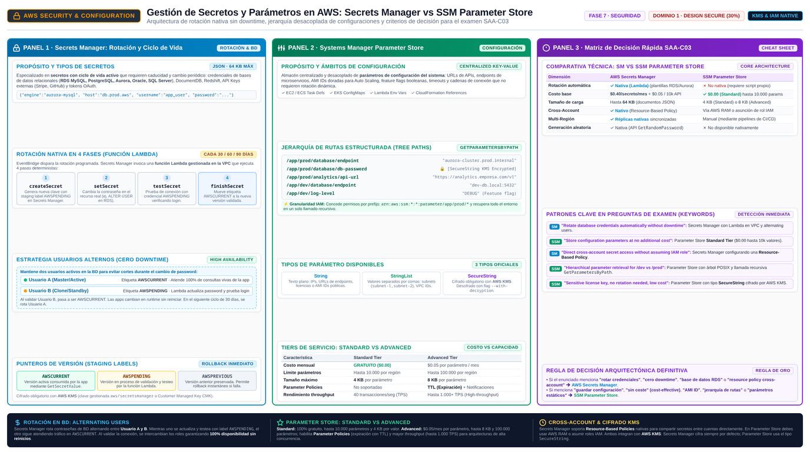

Secrets Manager y Parameter Store AWS Secrets Manager, AWS Systems Manager Parameter Store
Credenciales de base de datos, API keys y tokens: la pregunta del examen es dónde viven, quién las rota y cuánta automatización quieres pagar.
Imagina el código de una aplicación con la cadena de conexión a RDS escrita literalmente en un archivo: password=Sup3rS3cret. Ese hardcoded credential es el anti-patrón que AWS menciona de forma explícita en la documentación de Secrets Manager: cualquiera con acceso al repositorio, al contenedor o al AMI puede leerlo; cambiarlo obliga a re-desplegar la aplicación; y el auditor que revise el código acaba viendo la contraseña de producción. La solución oficial es sustituir el literal por una llamada en runtime al servicio de secretos, que devuelve la credencial cuando la aplicación la necesita.
La confusión del examen nace de que hay dos sitios donde guardar valores sensibles: AWS Secrets Manager (diseñado para secretos con ciclo de vida y rotación) y el Parameter Store de AWS Systems Manager (diseñado para configuración, con capacidad de cifrar valores SecureString). Ambos cifran en reposo con KMS, ambos se consultan en runtime y ambos integran con IAM. La diferencia que decide la respuesta es la rotación automática y el tipo de dato.
Secrets Manager: guardar, recuperar y rotar
Secrets Manager gestiona credenciales de bases de datos, credenciales de aplicación, tokens OAuth, API keys y otros secretos a lo largo de su ciclo de vida. La pieza estrella para el examen es la automatic rotation: defines un calendario y el servicio invoca una función Lambda que rota el secreto por ti — crea la nueva credencial en el recurso (por ejemplo, cambia el password de RDS), la valida y actualiza la versión del secreto. La aplicación ni se entera: sigue llamando al mismo identificador de secreto y recibe la versión vigente. Para bases de datos existe la estrategia alternating users, que alterna entre dos usuarios válidos para que la rotación nunca deje la app sin acceso.
El efecto combinado es el que la documentación subraya: reemplazas secretos de largo plazo por secretos de corto plazo, sin actualizar código ni desplegar clientes, reduciendo drásticamente la ventana de compromiso. Los secretos se cifran con KMS (la key gestionada aws/secretsmanager no tiene coste adicional; una customer managed key sí se factura a tarifa KMS), el acceso se controla con políticas IAM y con resource-based policies, y toda llamada a la API queda registrada en CloudTrail como management events. El precio se paga por secreto almacenado y por llamada de API — es el coste de la automatización.

Parameter Store: el primo gratuito de la configuración
El Parameter Store de AWS Systems Manager guarda parámetros de configuración con jerarquía de rutas (/miapp/prod/db-url, /miapp/prod/feature-flag), con dos tiers (Standard gratuito y Advanced de pago) y tres tipos de valor: String, StringList y SecureString. Un SecureString se cifra con una KMS key, de modo que la lectura exige permisos IAM y permisos sobre la key: puedes guardar ahí datos sensibles y denegar el descifrado selectivamente. EC2, ECS, Lambda y CloudFormation lo consultan en runtime igual que a Secrets Manager.
Lo que Parameter Store no tiene es rotación nativa: si necesitas cambiar un valor, lo actualizas tú (o un script tuyo), y las aplicaciones deben releerlo. Tampoco nativamente el modelo de versiones con staging de credenciales ni las plantillas de rotación para RDS. La regla mental: Parameter Store es para configuración (URLs, nombres de colas, flags) y valores que no cambian por política de seguridad; Secrets Manager es para credenciales que un compliance te obliga a rotar periódicamente.
| Criterio | Secrets Manager | Parameter Store (SSM) |
|---|---|---|
| Propósito | Secretos con ciclo de vida: credenciales, tokens, API keys | Configuración y valores de referencia |
| Rotación automática | Sí, programada, vía Lambda (plantillas para RDS) | No nativa: actualización manual o script propio |
| Cifrado | Siempre, con KMS (key aws/secretsmanager gratis o propia) | Opcional, como SecureString con KMS |
| Coste | Por secreto y por llamada de API | Standard gratuito; Advanced y APIs de alto rendimiento de pago |
| Generación de credenciales | Soporta secretos generados dinámicamente | Valores estáticos escritos por ti |
| Señal en el enunciado | "rotate database credentials automatically" | "store configuration", "no cost", "hierarchical parameters" |
secreta"} Q1 -->|"no"| PS["Parameter Store
String"] Q1 -->|"sí"| Q2{"¿Rotación programada
o política de cambio"} Q2 -->|"sí"| SM["Secrets Manager
rotación con Lambda"] Q2 -->|"no"| SS["Parameter Store
SecureString con KMS"] classDef navy fill:#EFF6FF,stroke:#3B82F6,stroke-width:2px,color:#1E293B classDef green fill:#F0FDF4,stroke:#10B981,stroke-width:2px,color:#1E293B classDef amber fill:#FFF7ED,stroke:#F59E0B,stroke-width:2px,color:#1E293B class IN navy class Q1,Q2 green class PS,SM,SS amber
Cómo cae en el examen: señales y trampas
| Si el enunciado dice… | La respuesta apunta a… |
|---|---|
| "database credentials are hardcoded in the application" | Moverlos a Secrets Manager y recuperarlos con GetSecretValue en runtime |
| "rotate credentials every 30 days without redeploying" | Secrets Manager con rotación automática (Lambda) |
| "store configuration values with no additional cost" | Parameter Store Standard |
| "store a license key / sensitive config encrypted with a customer managed key" | Parameter Store SecureString con KMS |
| "eliminate long-term credentials in EC2 for AWS APIs" | Distractor de secretos: eso se resuelve con roles IAM, no con Secrets Manager |
- Hardcoded credentials en código es el anti-patrón oficial: sustitúyelo por una llamada en runtime al servicio de secretos.
- Secrets Manager: rotación automática programada ejecutada por una Lambda, con plantillas para RDS y estrategia alternating users.
- Rotar un secreto no requiere re-desplegar la aplicación: consulta el identificador del secreto, no su valor.
- Parameter Store: jerarquía de rutas, tiers Standard/Advanced y
SecureStringcifrado con KMS. - Parameter Store no rota nativamente: la rotación es la frontera exacta entre ambos servicios.
- Secretos cifrados con KMS; el acceso requiere permisos IAM (y permisos sobre la key en SecureString).
- Credenciales de AWS = roles IAM; secretos de terceros = Secrets Manager; configuración = Parameter Store.
- SEC-04 AWS Secrets Manager — Introduction (rotation) · docs.aws.amazon.com/secretsmanager/latest/userguide/intro.html